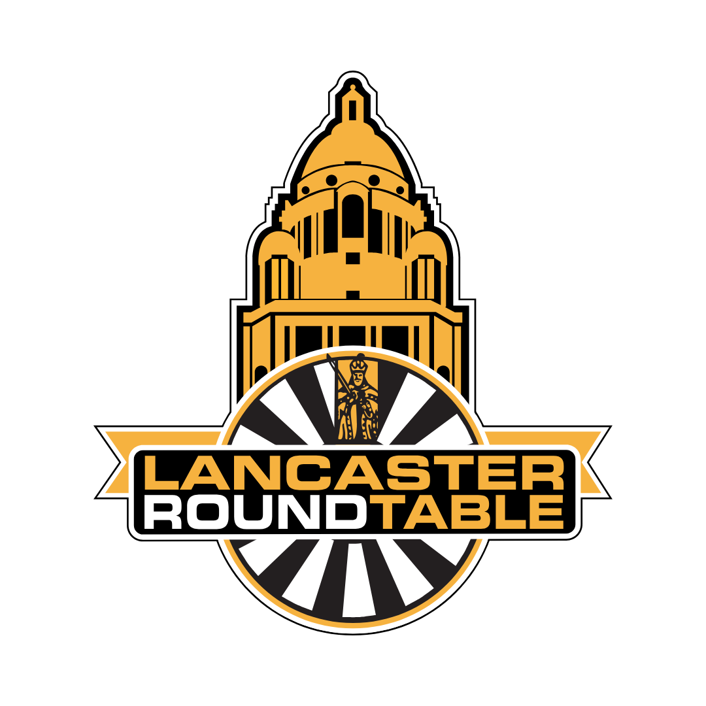
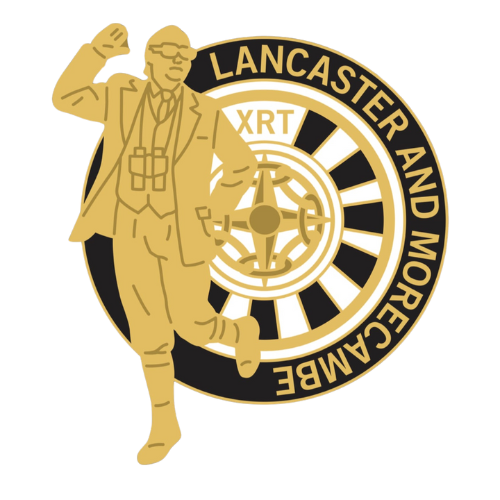
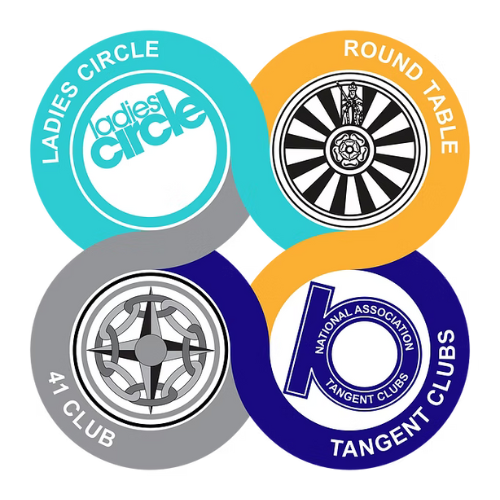
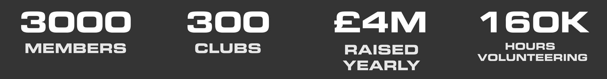

Established in 1947, Lancaster Round Table has been igniting the social lives of young men for almost 80 years! In that time, we’ve done a fair bit to support our local community too from helping at countless events to raising & donating hundreds of thousands of pounds to local charities and good causes.
We’re not some mysterious ‘old boys’ club with odd rituals and strict entry criteria based on what job you do or where you went to school – we are just a group of normal guys from different backgrounds who want a space where we can be ourselves, meet other people and do something fun.
First and foremost, we are an events based club for men aged 18-45: we meet up a couple of times a month to shake up the routine, get out of the house and make a midweek feel like the weekend! As we are all from different backgrounds, we do a varied range of events to cater for all sorts of interests and different budgets; but we always try to make it a bit of a break from the norm.
We are also a community minded organisation so get involved in local events, sometimes doing a bit of fundraising; sometimes just lending a hand. We then donate any money we raise to local charities or good causes. In a nutshell, Lancaster Round Table do more!
Round Table is a dynamic social club for men aged 18–45, dedicated to fostering friendship, personal growth, and community impact. With over 300 local clubs across Great Britain and Ireland, we offer a welcoming space for like-minded individuals to connect, share experiences, and make a difference.
At Round Table, we believe in the power of shared experiences to build lasting friendships. Our members engage in a variety of activities, from outdoor adventures like white water rafting and hiking to social events such as pub nights and gaming sessions. These gatherings provide opportunities to bond, learn new skills, and enjoy life beyond the usual routine.
Community service is at the heart of our mission. Each year, Round Table clubs raise over £4 million for local charities and contribute more than 160,000 hours of volunteer work. From organising firework displays and charity runs to supporting local causes, our members actively contribute to making a positive impact in their communities.
As part of Round Table International, we are connected to a global network of over 3,000 members across 60 countries. This international community provides a platform for cultural exchange, personal development, and lifelong friendships.


A more active branch of our ex-members club (41 Club) for guys aged 45-55 who have either recently left Lancaster Round Table or have discovered it a bit later and were outside of the age range of the main club. Established in 2023, Lancaster & Morecambe XRT are a fairly new club who have similar ideals to Lancaster Round Table meeting up once a month to do something fun or interesting.
We have close links with Lancaster Round Table, sometimes having joint events or even a bit of friendly competition to show them that we’ve still got the edge!
Round Table is open to everyone ages 18-45 who identifies as being, or lives as male. This includes people who are cisgender, transgender, and those assigned male at birth who are nonbinary. Our sister organisation Ladies Circle is open to individuals who identify as being or live as female of the same age. 41 Club and Tangent represent the interests of members over 45 years old.
Round Table is a truly international organisation with over 30,000 members in 60 different countries.

